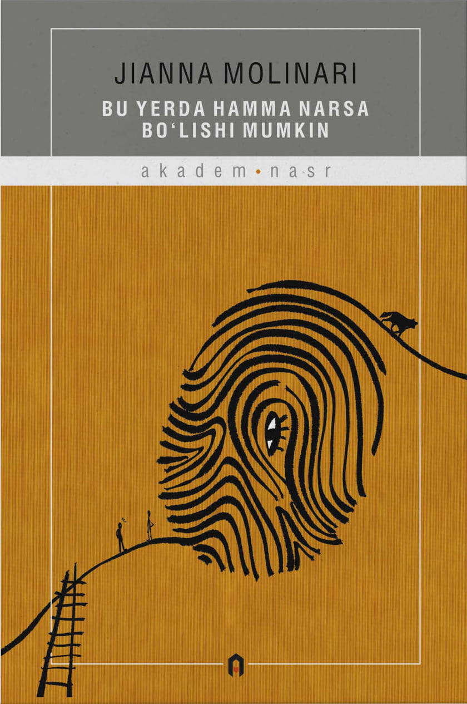

🌙 3***
Savollar sonini belgilang
Boshlang'ich raqamni tanlang

Qaysi funksiyani xohlaysiz?
Quiz testlar
Quiz aralash
Yopiq savol-javob
Yopiq savol-javob aralash
1-Qism
3
Yuklanmoqda...
Testni yakunlash